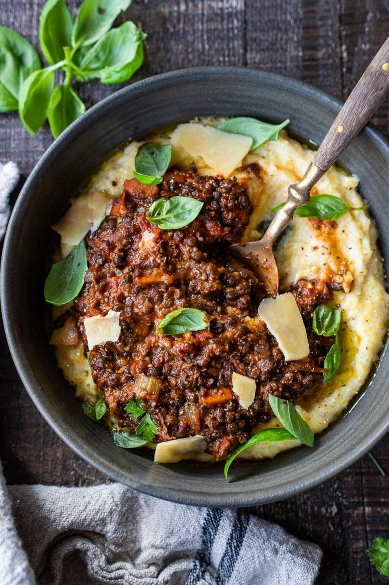
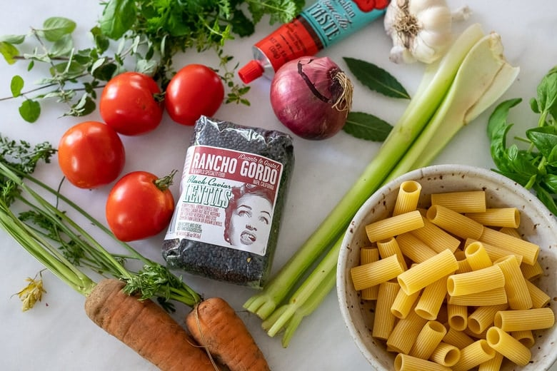

Rich and robust, this vegan Lentil Bolognese is hearty, “meaty” and full of depth of flavor. Toss it with your favorite pasta, or spoon it over creamy polenta- either way, this simple nourishing vegan meal is one the whole family will enjoy. With a video!
Looking for more? Check out our Mouthwatering Vegan Recipes and our 50 Best Vegetarian Recipes !

The last few nights have been chilly here. The air smells of leaves and pine, and woodsmoke from chimneys nearby. It’s getting darker sooner, I’ve got my wool socks on and all I want to eat right now is pasta. And bread! Cozy comfort food.
So this is how this recipe came to be. Brian and I were both craving something rich and “meaty” the other day, something that would hold up to a glass of red wine, all the while staying plant-based. And here it is- Lentil Bolognese!
We made a big pot of this vegan Bolognese and tossed it with pasta the first night, then served over polenta the second night. I can’t decide which way I liked it better. Both were so good!
LENTIL BOLOGNESE | 60-SEC VIDEO

INGREDIENTS IN LENTIL BOLOGNESE
- Lentils - the smaller the better! I prefer Black Caviar lentils (or sub-French Green Lentils or Split lentils)
- Onions and garlic – for depth of flavor
- Carrots and celery- for sweetness and complexity
- Fresh oregano or thyme –or substitute 2 teaspoons dried Italian herbs
- Tomato paste – to add depth and richness
- Red wine -optional, to add complexity
- Fresh tomatoe –or sub canned tomatoes
- Veggie stock -or substitute water plus veggie boullion
- Hemp seeds (or toasted walnuts or pecans) for texture and richness
- Balsamic vinegar – for a punch of flavor and brightness
